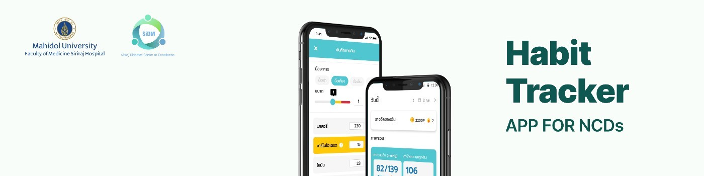
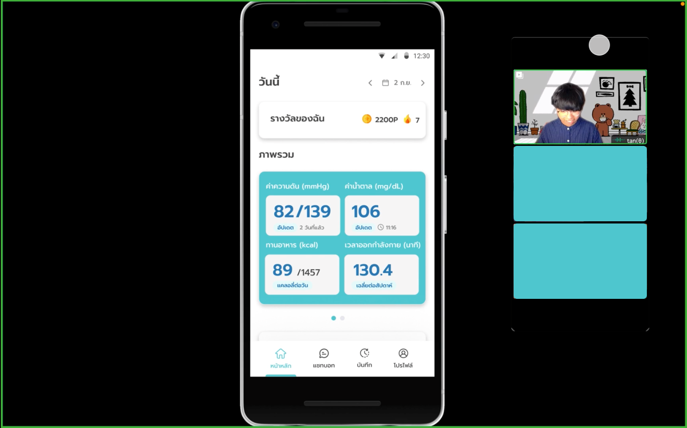
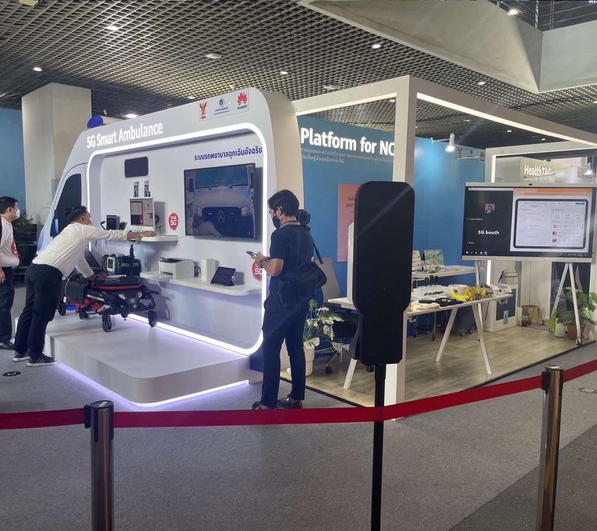
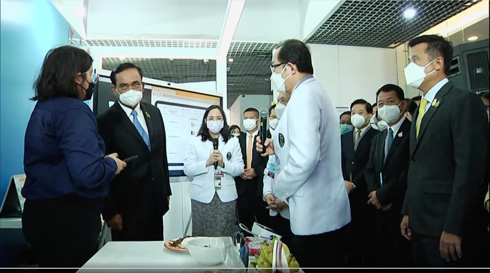
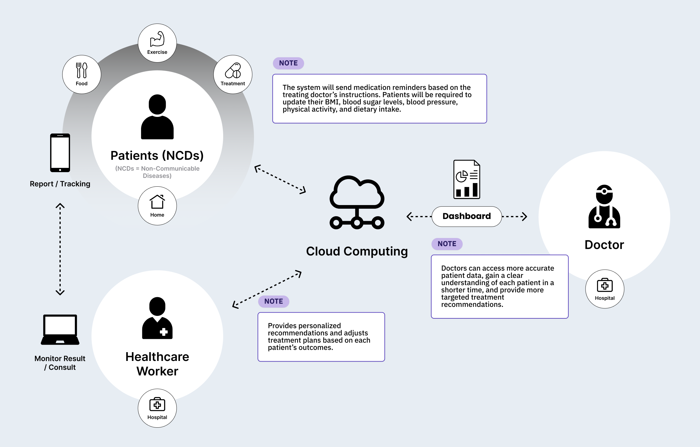

Siriraj NCDs - Tracker App
An app designed to empower individuals living with diabetes to build healthier habits
Overview

After the BKK team collaborated with the Lukkid team to gather user requirements from both doctors and patients, I had the opportunity to design the UX and UI to address the issues patients were facing based on the collected requirements. Once the prototype (MVP1) was developed, I arranged sessions with 10 patients to let them try it out and provide feedback, which we used to improve and refine the next version.

This project was a collaboration with Siriraj Hospital and Huawei to develop a smart platform aimed at enhancing medical services by integrating innovative technologies. The goal was to improve the overall quality of Thailand’s public healthcare services. All projects were showcased under the “Siriraj 5G” initiative, with our BKK team’s project being one of them. The event was presided over by the Prime Minister.


Key Players
1. Patients (Living with NCDs)
Empathize: Patients often struggle with maintaining consistent health routines and remembering complex medication schedules.
Define: They need timely reminders and a simple way to record daily health data.
Solution: The system provides personalized medication reminders based on doctor instructions. It empowers patients to log vital health metrics such as BMI, blood sugar, blood pressure, physical activity, and diet — enabling greater self-awareness and ownership of their health journey.
2. Healthcare Worker
Empathize: Healthcare workers aim to provide relevant, effective guidance but often lack real-time insight into patients’ daily behavior.
Define: There’s a need for tools that support timely intervention and adaptive care plans.
Solution: The system allows healthcare workers to offer personalized advice and dynamically adjust treatment plans in response to patient-reported outcomes — improving both relevance and responsiveness of care.
3. Doctor
Empathize: Doctors face time constraints and limited access to holistic patient data during consultations.
Define: They need quick access to accurate, longitudinal health data to make informed decisions.
Solution: The platform offers a comprehensive and up-to-date patient overview, allowing doctors to understand conditions faster and recommend more precise and personalized treatments — supporting both in-person and remote care (Telemedicine).

User Journey
During the COVID-19 period, our team referred patients to the Diabetes Center at Siriraj Hospital for close follow-up care to keep their treatment plans on track. Because quarantine measures prevented patients from traveling to see doctors and nutritionists in person, we designed a remote-care management flow that leverages technology to deliver continuous treatment and monitoring.

Doctor Dashboards
In addition to the patient-facing application, we aimed to allow users to log various aspects of their daily lives — such as meals, medication intake, weight, mood, blood pressure, and blood sugar levels. This information is also made accessible to doctors, enabling them to make more accurate diagnoses and adjust medications more precisely. It helps reduce time spent on taking patient history and solves issues where patients forget or are unable to provide detailed behavioral information during appointments — such as what they ate in each meal. By having this data recorded through the app, doctors can instantly view patient behavior, which also supports the future of telemedicine.

UI Concept